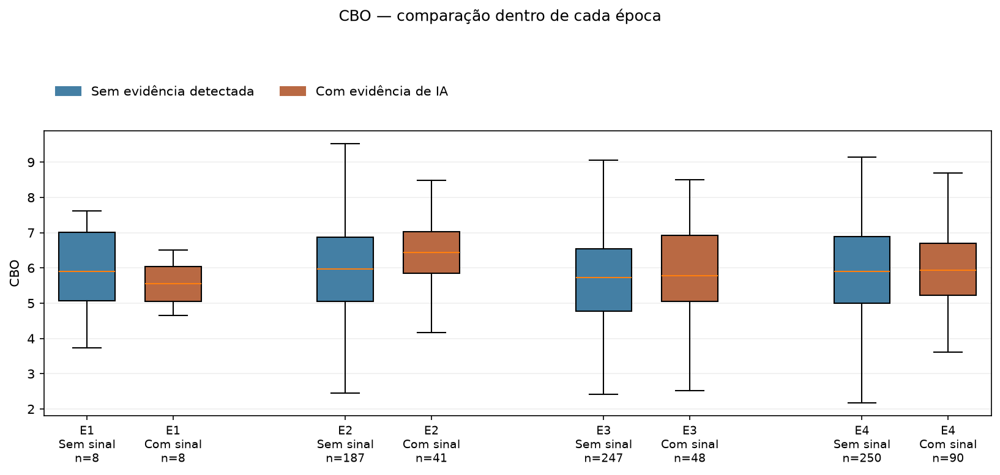
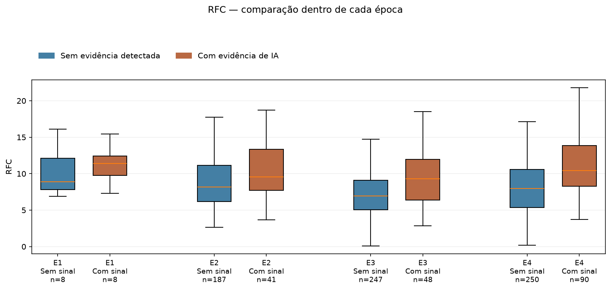
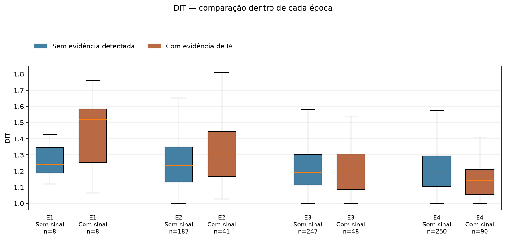
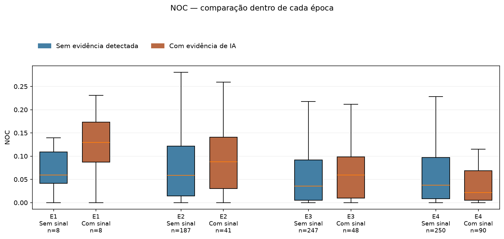
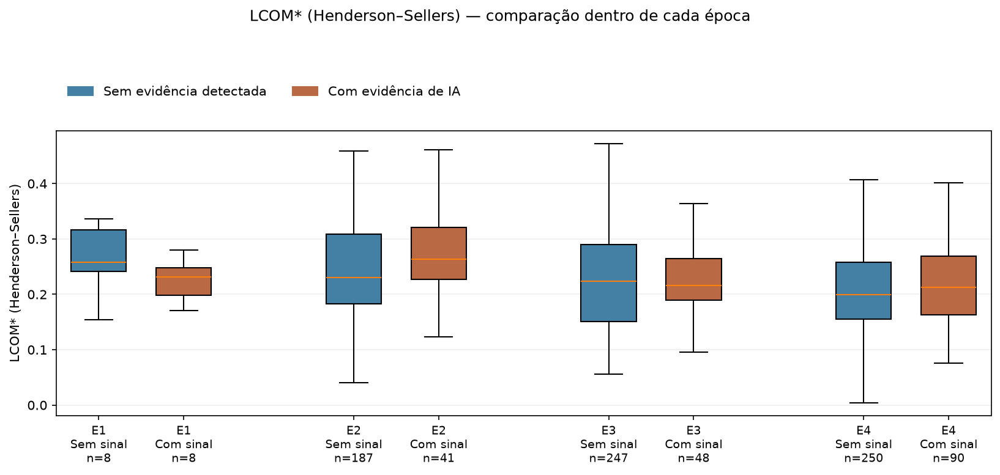

| Era | Período de criação | Candidatos processados | n_a · Sem evidência | n_b · Com evidência | Total elegível da era | Fora da comparação |
|---|---|---|---|---|---|---|
| E1 | 2009–2013 | 20 | 8 | 8 | 16 | 4 |
| E2 | 2014–2017 | 500 | 187 | 41 | 228 | 272 |
| E3 | 2018–2021 | 500 | 247 | 48 | 295 | 205 |
| E4 | 2022–coleta original | 500 | 250 | 90 | 340 | 160 |
| Total · 4 eras | Todos os períodos | 1520 | 692 | 187 | 879 | 641 |
n_a é a quantidade de repositórios elegíveis sem evidência detectada de IA. n_b é a quantidade de elegíveis com evidência de IA. O total elegível de cada era é n_a + n_b. A linha final soma as quatro eras.
“Candidatos processados” inclui todos os repositórios percorridos. “Fora da comparação” reúne os que não atenderam aos critérios técnicos ou tiveram falhas. Um candidato de E2 ficou com classificação indeterminada e está nesse total de exclusões.
As eras representam a data de criação do repositório. O código medido é a versão recuperada na coleta de outubro de 2026. Um repositório antigo pode conter alterações recentes e uso recente de IA.
| Métrica | O que mede |
|---|---|
| CBO | Acoplamento: quantidade de outras classes relacionadas à classe, pelas regras do CK. |
| RFC | Quantidade de chamadas distintas de métodos identificadas na classe pela versão CK utilizada. |
| WMC | Complexidade acumulada dos métodos de uma classe, considerando decisões e caminhos lógicos. |
| LOC/método | Tamanho médio dos métodos, em linhas contadas pelo CK. |
| DIT | Profundidade da hierarquia de herança das classes. |
| NOC | Quantidade de subclasses diretas de uma classe. |
| LCOM* | Falta de coesão na variante normalizada do CK, baseada no compartilhamento de atributos pelos métodos. |
Calculamos primeiro as médias por repositório. As tabelas mostram a mediana desses valores em cada grupo: o valor central após ordenar os repositórios. Cada projeto contribui uma vez, independentemente da quantidade de classes. Para LOC/método, a média é calculada sobre os métodos; para as demais métricas, sobre as classes com valores válidos.
Nas comparações por IA, A = sem evidência detectada e B = com evidência. As contagens n_a e n_b informam quantos repositórios têm valores válidos para cada métrica. Os valores são exibidos com três casas decimais.
| Métrica CK | n_a | n_b | Mediana A · Sem evidência | Mediana B · Com evidência |
|---|---|---|---|---|
| CBO | 692 | 187 | 5,825 | 5,992 |
| RFC | 692 | 187 | 7,697 | 9,849 |
| WMC | 692 | 187 | 4,964 | 6,185 |
| LOC/método | 692 | 187 | 5,712 | 6,635 |
| DIT | 692 | 187 | 1,202 | 1,188 |
| NOC | 692 | 187 | 0,042 | 0,041 |
| LCOM* (Henderson–Sellers) | 692 | 187 | 0,217 | 0,230 |
Compare os valores de cada métrica entre as duas colunas. Por exemplo, a mediana de RFC é 7,697 no grupo sem evidência e 9,849 no grupo com evidência. Esses números descrevem os projetos desta amostra.
Valores maiores ou menores não representam, isoladamente, uma nota de qualidade. A interpretação depende do indicador, do tamanho e das características dos projetos.
Em cada tabela, A é o grupo sem evidência detectada e B é o grupo com evidência. As duas colunas de mediana mostram o valor medido da mesma métrica nesses grupos.
| Métrica CK | n_a | n_b | Mediana A · Sem evidência | Mediana B · Com evidência |
|---|---|---|---|---|
| CBO | 8 | 8 | 5,907 | 5,548 |
| RFC | 8 | 8 | 8,903 | 11,385 |
| WMC | 8 | 8 | 7,234 | 7,556 |
| LOC/método | 8 | 8 | 5,715 | 7,167 |
| DIT | 8 | 8 | 1,239 | 1,519 |
| NOC | 8 | 8 | 0,060 | 0,130 |
| LCOM* (Henderson–Sellers) | 8 | 8 | 0,258 | 0,231 |
| Métrica CK | n_a | n_b | Mediana A · Sem evidência | Mediana B · Com evidência |
|---|---|---|---|---|
| CBO | 187 | 41 | 5,973 | 6,440 |
| RFC | 187 | 41 | 8,167 | 9,575 |
| WMC | 187 | 41 | 5,570 | 7,210 |
| LOC/método | 187 | 41 | 5,804 | 6,073 |
| DIT | 187 | 41 | 1,236 | 1,312 |
| NOC | 187 | 41 | 0,059 | 0,088 |
| LCOM* (Henderson–Sellers) | 187 | 41 | 0,230 | 0,264 |
| Métrica CK | n_a | n_b | Mediana A · Sem evidência | Mediana B · Com evidência |
|---|---|---|---|---|
| CBO | 247 | 48 | 5,729 | 5,776 |
| RFC | 247 | 48 | 6,938 | 9,277 |
| WMC | 247 | 48 | 4,669 | 5,411 |
| LOC/método | 247 | 48 | 5,455 | 6,340 |
| DIT | 247 | 48 | 1,192 | 1,208 |
| NOC | 247 | 48 | 0,035 | 0,059 |
| LCOM* (Henderson–Sellers) | 247 | 48 | 0,224 | 0,216 |
| Métrica CK | n_a | n_b | Mediana A · Sem evidência | Mediana B · Com evidência |
|---|---|---|---|---|
| CBO | 250 | 90 | 5,908 | 5,939 |
| RFC | 250 | 90 | 7,977 | 10,444 |
| WMC | 250 | 90 | 4,552 | 6,477 |
| LOC/método | 250 | 90 | 5,877 | 7,143 |
| DIT | 250 | 90 | 1,188 | 1,141 |
| NOC | 250 | 90 | 0,037 | 0,022 |
| LCOM* (Henderson–Sellers) | 250 | 90 | 0,199 | 0,212 |
Medianas de todos os elegíveis de cada era, reunindo os dois grupos de evidência.
| Era | Total de repositórios | CBO | RFC | WMC | LOC/método | DIT | NOC | LCOM* (Henderson–Sellers) |
|---|---|---|---|---|---|---|---|---|
| E1 | 16 | 5,625 | 10,535 | 7,556 | 6,574 | 1,307 | 0,102 | 0,244 |
| E2 | 228 | 6,056 | 8,555 | 5,805 | 5,982 | 1,241 | 0,063 | 0,240 |
| E3 | 295 | 5,734 | 7,203 | 4,867 | 5,583 | 1,196 | 0,039 | 0,222 |
| E4 | 340 | 5,926 | 8,579 | 5,038 | 6,102 | 1,171 | 0,034 | 0,204 |
Nestas tabelas, A = E3 e B = E4. Portanto, n_a e n_b passam a contar os repositórios dessas eras.
| Métrica CK | n_a | n_b | Mediana A · E3 | Mediana B · E4 |
|---|---|---|---|---|
| CBO | 295 | 340 | 5,734 | 5,926 |
| RFC | 295 | 340 | 7,203 | 8,579 |
| WMC | 295 | 340 | 4,867 | 5,038 |
| LOC/método | 295 | 340 | 5,583 | 6,102 |
| DIT | 295 | 340 | 1,196 | 1,171 |
| NOC | 295 | 340 | 0,039 | 0,034 |
| LCOM* (Henderson–Sellers) | 295 | 340 | 0,222 | 0,204 |
| Métrica CK | n_a | n_b | Mediana A · E3 | Mediana B · E4 |
|---|---|---|---|---|
| CBO | 247 | 250 | 5,729 | 5,908 |
| RFC | 247 | 250 | 6,938 | 7,977 |
| WMC | 247 | 250 | 4,669 | 4,552 |
| LOC/método | 247 | 250 | 5,455 | 5,877 |
| DIT | 247 | 250 | 1,192 | 1,188 |
| NOC | 247 | 250 | 0,035 | 0,037 |
| LCOM* (Henderson–Sellers) | 247 | 250 | 0,224 | 0,199 |
| Métrica CK | n_a | n_b | Mediana A · E3 | Mediana B · E4 |
|---|---|---|---|---|
| CBO | 48 | 90 | 5,776 | 5,939 |
| RFC | 48 | 90 | 9,277 | 10,444 |
| WMC | 48 | 90 | 5,411 | 6,477 |
| LOC/método | 48 | 90 | 6,340 | 7,143 |
| DIT | 48 | 90 | 1,208 | 1,141 |
| NOC | 48 | 90 | 0,059 | 0,022 |
| LCOM* (Henderson–Sellers) | 48 | 90 | 0,216 | 0,212 |
Este recorte reúne 132 pares: um projeto com evidência e outro sem evidência, da mesma era e da mesma versão principal identificada do Spring Boot, com tamanho em LOC dentro de um fator de dois. Aqui, A volta a ser o grupo sem evidência e B o grupo com evidência.
| Métrica CK | n_a | n_b | Mediana A · Sem evidência | Mediana B · Com evidência |
|---|---|---|---|---|
| CBO | 132 | 132 | 5,834 | 5,968 |
| RFC | 132 | 132 | 9,198 | 9,869 |
| WMC | 132 | 132 | 5,943 | 6,229 |
| LOC/método | 132 | 132 | 5,917 | 6,680 |
| DIT | 132 | 132 | 1,232 | 1,159 |
| NOC | 132 | 132 | 0,049 | 0,033 |
| LCOM* (Henderson–Sellers) | 132 | 132 | 0,223 | 0,232 |
As colunas apresentam as medianas das métricas dos dois grupos de projetos pareados.
A linha dentro de cada caixa mostra a mediana. A caixa reúne os 50% centrais dos valores. A marcação n indica quantos repositórios estão representados. Os pontos extremos ficam ocultos no gráfico para facilitar a leitura, mas permanecem no cálculo das medianas e nos arquivos de dados.





Métricas por repositório elegível · Todos os candidatos processados · Contagens por era e evidência · Classificações · Exclusões